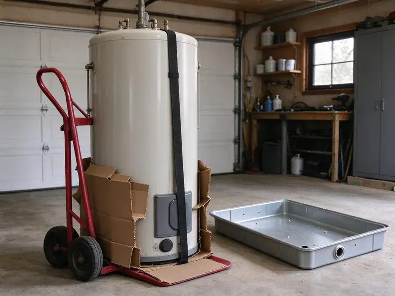
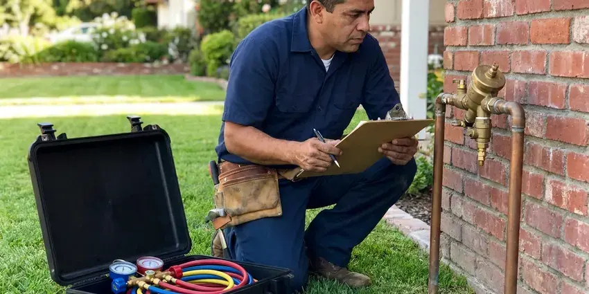

PEX Pipe Installation in Sitka, AK
Thinking about PEX pipe installation for your Sitka, AK home? CKN Plumbing provides professional PEX piping for new construction and repiping projects.
- Honest Pricing
- Code Compliant Work
- Small Drywall Openings
- Licensed PEX Plumbers

Need PEX Pipe Installation Experts in Sitka, AK?
Our friendly team is ready to provide quality PEX installation for your home.
Expert PEX Pipe Installation Services in Sitka, AK
CKN Plumbing offers professional PEX pipe installation for homeowners throughout Sitka, AK. PEX, or cross-linked polyethylene, is a modern plumbing material known for its flexibility, durability and resistance to corrosion and scaling, making it an excellent choice for Alaska homes.
Our expertise includes:
- Compliance with all Alaska plumbing codes
- Whole-home PEX repiping services
- PEX main water line connections and installations

Additional Plumbing Installation Services in Sitka, AK
We install water heaters, pumps, lines, and fixtures across Sitka, AK with careful, permitted work that passes inspection the first time.




Backflow Preventer Installation in Sitka

Customers
Why Choose CKN Plumbing for PEX Pipe Installation in Sitka, AK?
Choosing CKN Plumbing for your PEX pipe installation means choosing a plumbing system that resists hard water and temperature swings. Some rural households in Alaska use hauled water and storage tanks, which brings its own pump and freeze protection needs. Our careful approach ensures a robust and leak-free setup.
- Fewer Joints, Long continuous runs mean fewer hidden fittings that might leak.
- Cost-Effective, PEX is usually less expensive to install than copper, saving you money on labor and materials.
- Flexibility, Its flexibility allows for fewer fittings and connections, cutting down potential leak points in your plumbing system.
Citywide Coverage
Whether you live in an older central neighborhood or a newer master-planned community in Sitka, we can repipe your home. We also install PEX for additions, guest suites and kitchen or bath remodels.
Experienced Team
Our team of licensed plumbers has deep experience with PEX pipe installation, having completed numerous projects across Sitka, AK. We stay up to date on best practices and local codes so every installation is solid and durable.
Safety-First Approach
PEX must be kept out of direct sunlight and away from heat sources like water heater flues, so we sleeve and route it with care in attics. We also follow distance requirements from the water heater using listed transition fittings.
Trusted Certified Sitka Plumbing Services Professionals
At CKN Plumbing, we take pride in providing licensed, certified plumbing services throughout Sitka, AK. Backed by recognized industry credentials, our experienced plumbers combine technical skill with genuine customer care. Whether it is repair, installation, or maintenance, we follow strict safety and quality standards to deliver lasting results you can trust.
Call Us Now PHCC Plumbing Contractor Recognition
PHCC Plumbing Contractor Recognition Better Business Bureau (BBB) Accreditation
Better Business Bureau (BBB) Accreditation Angi Certified Pro
Angi Certified Pro ISO 9001 Quality Management Certification
ISO 9001 Quality Management CertificationLong-Lasting PEX Pipe Installation Services in Sitka, AK
PEX-A vs. PEX-B Installation in Sitka
We offer installation for both PEX-A and PEX-B piping and understand the different advantages of each. PEX-A, often preferred for its flexibility and ability to recover from minor kinks, uses expansion fittings. PEX-B is more rigid but also very durable, usually using crimp or compression fittings. Our plumbers in Sitka can help you decide which type of PEX suits your project, considering factors like budget and application.

Uponor PEX System Installation in Sitka
CKN Plumbing frequently installs Uponor PEX systems, a leading brand known for high-quality, durable PEX-A piping. Uponor's ProPEX expansion fittings create strong, reliable and leak-resistant connections, well suited for the demands of a home's plumbing. We recommend Uponor for its proven track record and longevity, giving Sitka homeowners peace of mind about their plumbing investment.
Polybutylene Replacement With PEX in Sitka, AK
Gray polybutylene pipe was common in homes built from the late 1970s through the mid 1990s and is notorious for sudden failures. Chlorine in municipal water breaks down the plastic and its fittings over time. Plenty of insurers now ask about polybutylene when writing a policy. Replacing it with PEX removes that risk and can make your home easier to insure and sell.
PEX-A, PEX-B, and PEX-C Systems in Sitka, AK
CKN Plumbing is knowledgeable in installing all types of PEX piping, including PEX-A, PEX-B and PEX-C, each with distinct properties for specific applications. We help you choose the best PEX type for your home's needs and budget in Sitka, AK. Our expertise ensures the correct PEX material and fitting method, whether it is expansion for PEX-A or crimp and clamp for PEX-B and PEX-C, for a secure and lasting system.
Hydronic Heating with PEX in Sitka
PEX is also a leading choice for hydronic heating systems, including radiant floor heating. Its ability to withstand high temperatures and resist corrosion makes it well suited for circulating hot water. If you are considering radiant heat for a specific area of your home or business in Sitka, PEX is the pipe of choice.
PEX Repipe Cost Comparison in Sitka, AK
PEX repipes usually cost less than copper repipes because the material is less expensive and installs faster. The total depends on the number of bathrooms, the home's size and how accessible the attic and walls are. Drywall patching and texture matching are often included or quoted separately. We give you a detailed estimate so you can compare PEX-A, PEX-B and copper options side by side.
PEX-B Crimp and Clamp Systems in Sitka
PEX-B is stiffer and more affordable, and it is joined with copper crimp rings or stainless steel cinch clamps over brass or poly fittings. It is a good option for smaller projects and budget-conscious repipes. Brands like Viega, Zurn and SharkBite offer dependable PEX-B systems. We use a go/no-go gauge on every crimp to verify a proper seal.

PEX for Water Line Replacement in Sitka
When your main water line from the street to your home needs replacement, PEX is an smart option. Its flexibility allows for easier trenchless or minimal-dig installations, limiting disruption to your yard in Sitka. PEX main lines handle ground movement and resist corrosion better than rigid pipe. Permafrost in colder parts of Alaska complicates any buried plumbing, and thawing ground can cause settling that cracks pipes.
Nearby PEX Pipe Installation in Sitka, AK
If you have had another leak and are searching for PEX pipe installation near me, schedule a free repipe estimate with our local team. We inspect your current pipes, attic access and fixture count. Then we give you a written price and schedule.
We understand the value of having a reliable local plumber who knows the requirements of homes in Sitka. Being nearby lets us offer timely service, so your PEX pipe installation project is handled with speed and professionalism.
CKN Plumbing at a Glance
- Fully licensed plumbing team covering Sitka, AK
- Same-day appointments and 24/7 emergency response
- Clear written estimates, no hidden fees
- 4.9-star rated by 309+ Alaska customers
Sitka Map
Sitka Information
- Population
- 8,282
- Area codes
- Local
- Service area
- Sitka and communities within 40 miles
- Nearby
- Juneau, Ketchikan, Anchorage, Palmer
Hard water, aging copper and slab-on-grade construction leave many homes with repeat pinhole and slab leaks, and an overhead PEX repipe ends that cycle.
Expert Services
Trust our professionals for reliable CKN Plumbing solutions in Sitka, AK.
Our Specialized Plumbing Services in Sitka, AK
At CKN Plumbing, we provide a complete range of plumbing services across Sitka, AK. From leak detection to full system installations, our team ensures fast, precise, and affordable service for both residential and commercial properties. Explore our core services below:


Our Process for Installing PEX Pipe in Sitka, AK
We follow a clear, step-by-step approach to ensure a high-quality and lasting PEX plumbing system for your property.
Request a Quote
Call (928) 470-9007 to schedule an in-home estimate. We inspect your plumbing and give you a written quote with material options and a timeline.
Plan and Install
We protect your home, open only the necessary access points and run new PEX to each fixture. Water is restored at the end of each day whenever possible.
Test and Patch
We pressure test the full system, pass inspection when required and patch the drywall openings. Then we walk you through the new shutoffs.
Frequently Asked Questions About PEX Pipe Installation in Sitka
The cost of PEX pipe installation in Sitka can range from $2,500 to $15,000 or more, depending on the size of your home, accessibility and whether it is a full repipe or a partial replacement. Minor repairs might be a few hundred dollars. We provide a detailed quote after an on-site assessment.
Most whole-home PEX repipes take two to four days. Larger homes or tight attic access can take a bit longer.
We install Uponor PEX-A along with Viega, Zurn and SharkBite PEX-B systems. We recommend the system that suits your project and budget.
CKN Plumbing stands behind our PEX pipe installations with a comprehensive warranty on both labor and materials. Specific warranty details will be provided with your estimate, but you can be confident your new PEX system is installed correctly and will perform reliably for years to come in your Sitka home.
We install high-quality PEX piping from reputable manufacturers such as Uponor (PEX-A), Viega (PEX-B) and Zurn (PEX-B). We also work with other proven brands like SharkBite for fittings, so the best materials are used for your installation.
PEX can be used for outdoor applications like irrigation lines or outdoor spigots, but it needs to be protected from direct UV light, which can break down the material over time. When used outdoors, PEX should consistently be buried or otherwise shielded.
The timeline for PEX pipe installation depends on the size and complexity of the project. A small repair or extension might take a few hours, while a complete whole-home repipe for an average-sized house in Sitka usually takes 2 to 5 days. We work efficiently to minimize disruption to your daily routine.
Yes, PEX pipe is certified safe for drinking water. It does not leach chemicals into the water and resists scale and chlorine corrosion, which can affect older metal pipes. PEX is a common choice for potable water systems in homes across Sitka, AK due to its safety and performance.
What People Are Saying About Our Plumbing Experts?

Daniel K.
A pipe burst at 11 pm and they actually answered. The plumber showed up within the hour, shut everything down, and had us back to normal the next morning. Could not ask for more.
Emergency Plumbing · Ketchikan, AK
Emily R.
I called CKN Plumbing for plumbing repair, and the technician was fast, polite, and thorough. They explained the problem clearly and fixed it the same day. I will definitely hire them again. Highly recommended!
Plumbing Repair · South Lakes, AK
Mark T.
When our office needed drain cleaning, CKN Plumbing provided quick, reliable service. The plumber arrived on time and made sure every drain flowed perfectly before leaving. Very satisfied.
Drain Cleaning · South Lakes, AK
Robert G.
The trenchless sewer replacement saved our front yard. They walked us through the camera inspection footage first so we knew exactly what we were paying for.
Sewer Line Replacement · Gateway, AKJames P.
Our commercial plumbing system had a leak under the sink, and CKN Plumbing handled it professionally. The plumbers arrived quickly and restored everything without disruption to our customers.
Commercial Plumbing · Sitka, AK
Laura S.
I scheduled a water heater replacement, and the team made the process smooth and affordable. The new unit works perfectly, and they cleaned up after completing the job.
Water Heater Replacement · South Lakes, AK